1. 빠른 체험 — 30초 데모
- 라이브 URL 을 모바일 크롬으로 열기 (또는 데스크톱에서 세로 뷰포트)
- 첫 방문이면 온보딩 3장 카드가 뜸 →
CONTINUE→CONTINUE→ENTER SANCTUARY - 로비에서
✧ Try Demo링크 (또는 상단 노란TRY DEMO배너) - 게임 화면 하단 3D 주사위 트레이에서 하나 탭 → 배치 확인
- 데모 완료 콜아웃 →
BACK TO LOBBY
2. 화면별 안내
2-1. 온보딩 카드 (첫 방문 자동)
3장의 스와이프 카드로 컨셉을 소개합니다. localStorage.sagrada.onboarded='1' 저장으로 재방문 시 표시되지 않음.
{kind=link}
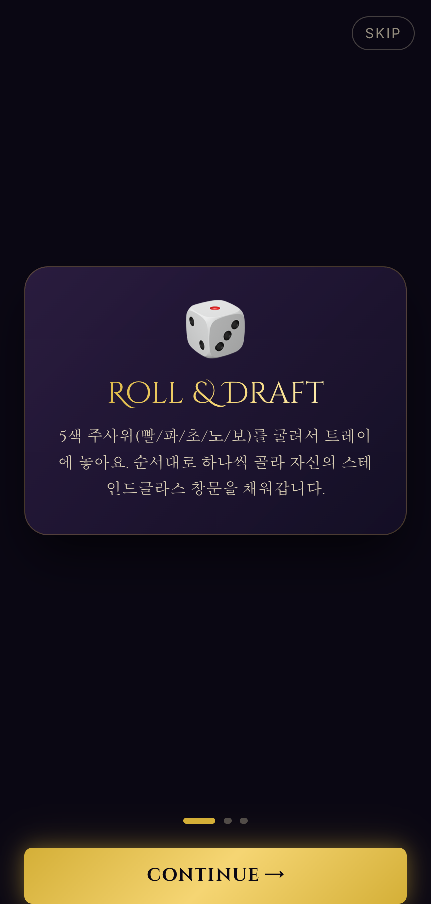
{kind=link}
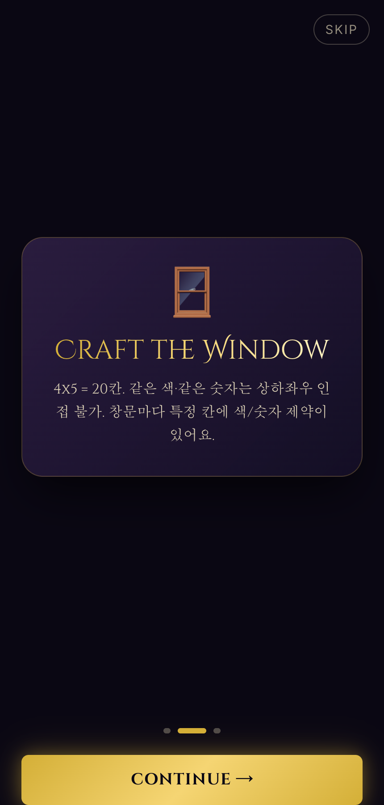
{kind=link}
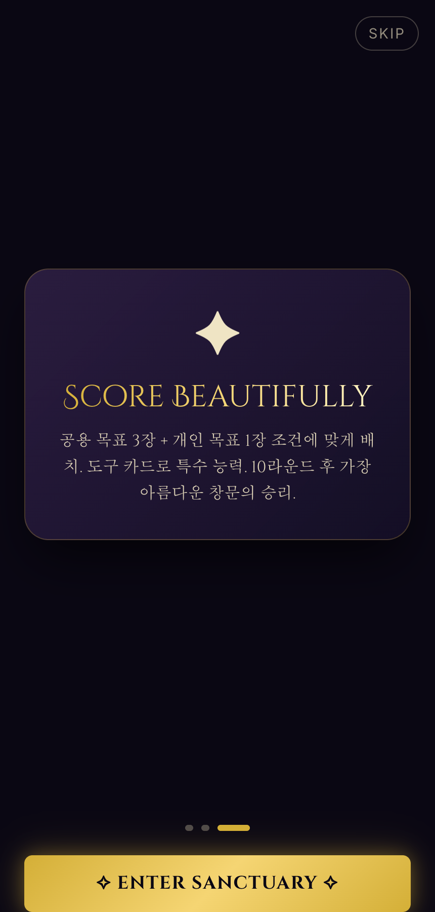
- 우상단
SKIP— 즉시 로비 진입 - 하단 점 (●●●) — 카드 직접 이동
- 마지막 카드에서 ✧ ENTER SANCTUARY ✧ 로 완료
2-2. 로비 (메인 메뉴)
{kind=link}
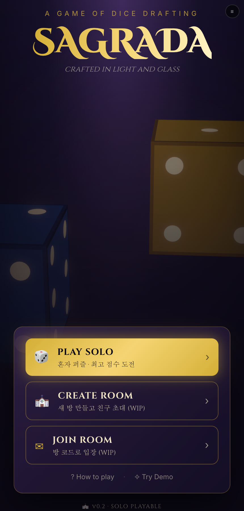
3D Floating Dice
R3F 로 5개의 3D 주사위가 부유·회전. 유리 재질에 골드 광택.
세 갈래 진입
PLAY SOLO · CREATE ROOM · JOIN ROOM
초심자 배려
하단에 ? How to play · ✧ Try Demo
2-3. 방 만들기 · 방 입장
{kind=link}
{kind=link}
2-4. 대기실 & 패턴 선택
{kind=link}
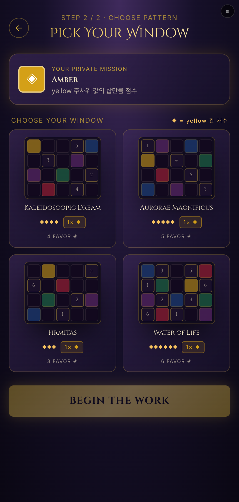
{kind=link}
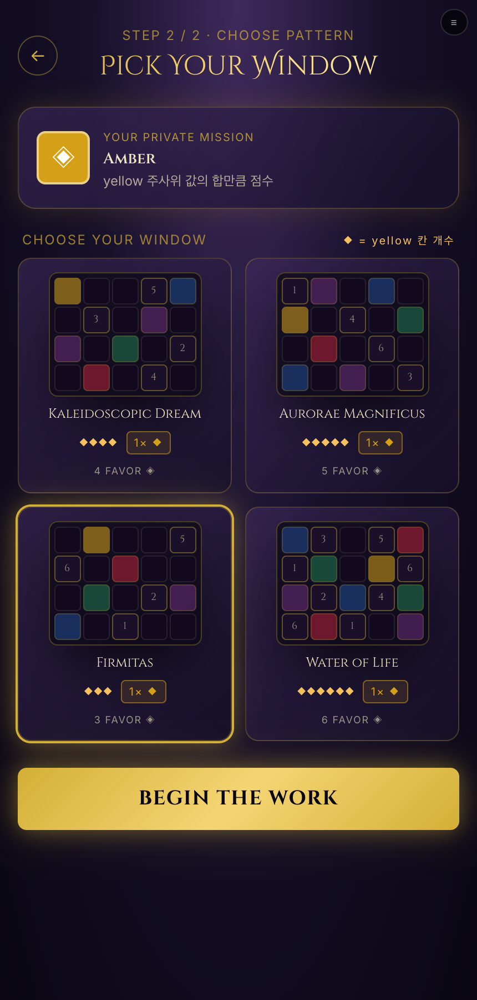
2-5. 게임 씬 (실제 플레이 가능)
{kind=link}
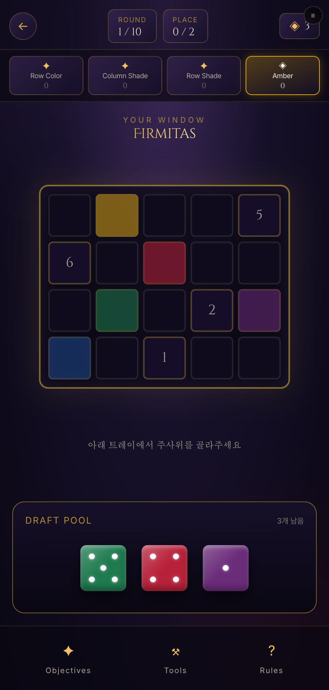
HUD 레이아웃
- 상단:
← 뒤로·ROUND N/10·PLACE 0/2·◈ Favor tokens - 메인: 큰 4×5 인터랙티브 창문 (Firmitas 등 패턴 표시)
- 중간: 상황별 안내 메시지
- 하단:
DRAFT POOL— 3개 주사위 (라운드 시작 시 굴리기 애니메이션) - 바닥 rail:
✦ Objectives·⚒ Tools·? Rules
인터랙션
- 주사위 굴리기 — 라운드 시작 시 자동으로 3개 굴려짐 (흔들리는 애니메이션 → 값 확정)
- 주사위 선택 — 트레이에서 탭 → 골드 링 하이라이트
- 유효 칸 표시 — 창문에서 놓을 수 있는 칸에 골드 하이라이트 + 펄스
- 규칙 위반 — 잘못된 칸 탭 시 붉은 토스트로 사유 안내
- 배치 완료 — PLACE 카운터 갱신 · 2/2 되면 다음 라운드 자동 진행
2-6. 목표 카드 시트 (✦)
{kind=link}
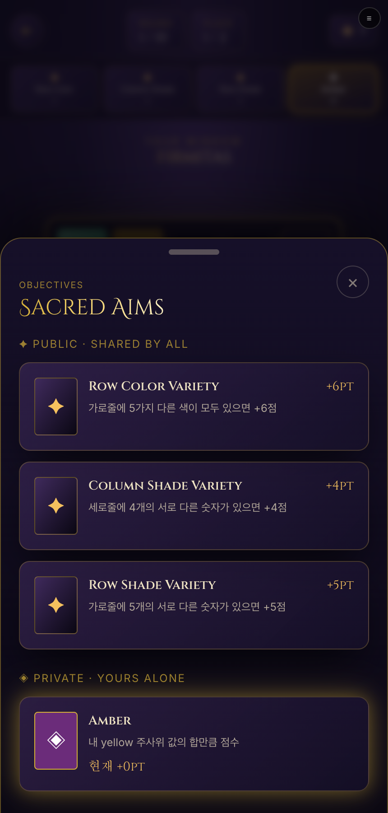
- PUBLIC · SHARED BY ALL: Row Color Variety +6pt, Column Shades of Dark +5pt, Diagonal Colors +1pt
- PRIVATE · YOURS ALONE: 개인 목표 1장 (Amethyst 등) — 골드 링 강조
2-7. 도구 카드 시트 (⚒)
{kind=link}
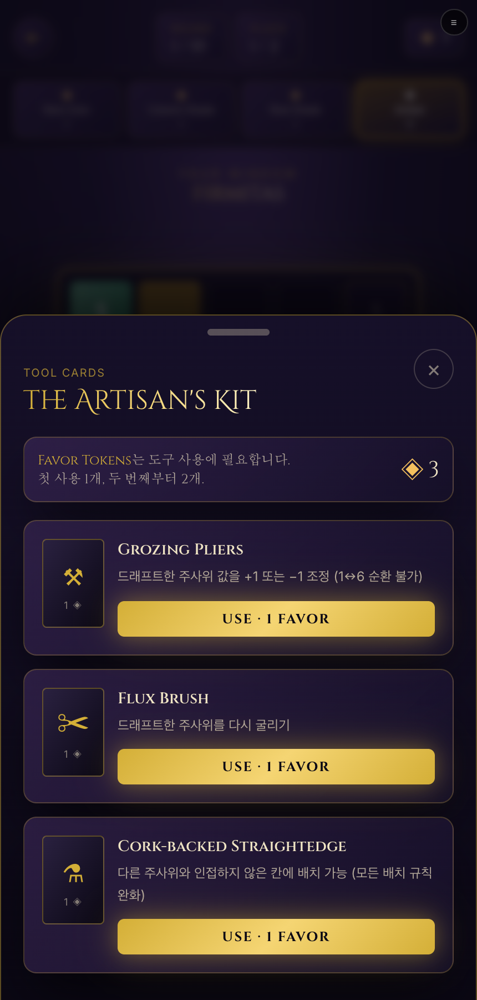
- Grozing Pliers · 1 ◈ — 드래프트 풀 주사위 값 ±1 조정
- Copper Foil Burnisher USED ONCE · 2 ◈ — 재배치
- Lens Cutter · 1 ◈ — 라운드 트랙과 교환
2-8. 룰 시트 (?)
{kind=link}
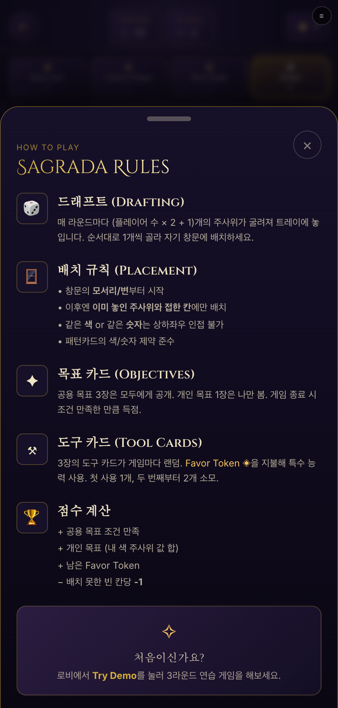
2-9. 스코어보드
{kind=link}
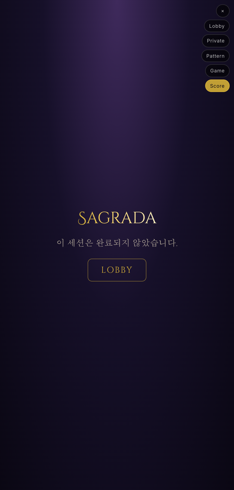
- 왕관 이모지 + 1위 아바타 크게 강조 · 골드 shimmer 총점
- 각 카드: Row/Column/Diagonal · Private · Favor · Empty Cells
- 하단
LOBBY/PLAY AGAIN
2½. 조작 가이드 — 손가락 표시
실제 게임 화면에서 어디를 어떻게 탭해서 주사위를 배치하는지 3단계로 안내합니다.
1 주사위 고르기
2 놓을 곳 고르기
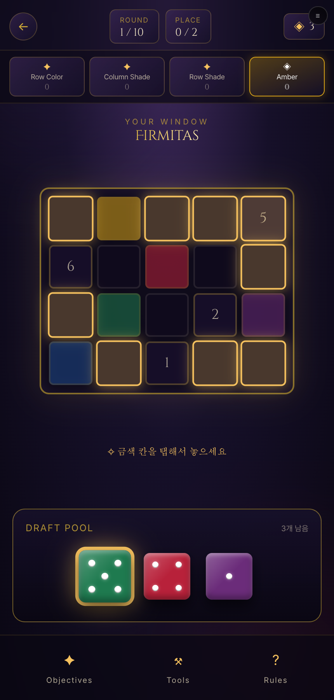
3 배치 완료
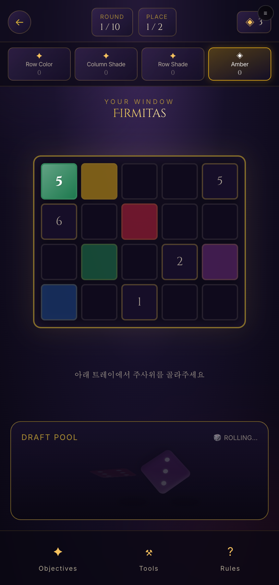
Sagrada 원작 룰 순서
원작 보드게임 흐름을 따라 개인 미션이 패턴 선택보다 먼저 배분됩니다.
{kind=link}
더 자세한 조작 팁
- 주사위 선택 취소: 이미 선택한 주사위를 다시 탭 → 취소 (또는 다른 주사위 탭)
- 규칙 위반 시: 규칙에 어긋난 칸을 탭하면 붉은 토스트로 이유를 알려줍니다 (예: "인접한 칸에 같은 색이 있어요")
- 배치 완료: 라운드에 최대 2개까지 놓을 수 있어요. 2개 놓으면 자동으로 다음 라운드로 넘어가요
- 도구 카드 사용: 하단
⚒ Tools→ 도구 선택 → 옵션에 따라+1 / −1,🎲 리롤,비인접 배치 - 목표 카드 확인: 언제든지
✦ Objectives탭 → 지금 몇 점 얻고 있는지 실시간 확인 가능 - 게임 나가기: 좌상단
←로 로비 복귀 (진행중이던 게임은 사라짐)
3. 흐름도
4. 기술 구조
4-1. 폴더 구조
sagrada-online/
├── src/
│ ├── App.tsx # 씬 라우팅 (state-based, 즉시 스왑)
│ ├── main.tsx
│ ├── index.css # Tailwind + 커스텀 유틸
│ ├── scenes/ # 4개 씬
│ │ ├── LobbyScene.tsx
│ │ ├── WaitingScene.tsx
│ │ ├── GameScene.tsx # 3D + HUD + 시트
│ │ └── ScoreboardScene.tsx
│ ├── ui/ # 재사용 UI
│ │ ├── OnboardingCards.tsx
│ │ ├── PatternGrid.tsx
│ │ ├── Sheet.tsx # 공용 바텀시트
│ │ ├── ObjectivesSheet.tsx
│ │ ├── ToolsSheet.tsx
│ │ ├── RulesSheet.tsx
│ │ └── SceneSwitcher.tsx # 개발용 씬 이동 (top-right)
│ ├── three/ # R3F 컴포넌트
│ │ ├── Die3D.tsx # 유리 재질 6면 주사위
│ │ ├── StainedGlassWindow.tsx
│ │ ├── DiceDraftPool.tsx
│ │ ├── CathedralEnv.tsx # 조명 프리셋
│ │ └── useCanvasCleanup.ts # WebGL context 해제
│ ├── game/ # 도메인 타입 + 목데이터
│ │ ├── types.ts
│ │ └── mockData.ts
│ └── store/
│ └── uiStore.ts # Zustand
├── manual/ # 이 매뉴얼
├── scripts/capture-manual.mjs # Puppeteer 자동 캡처
└── deploy.sh # AWS S3+CloudFront 배포4-2. 디자인 토큰
| 이름 | 색상 | 용도 |
|---|---|---|
cathedral-void | #0A0713 | 배경 최심층 |
cathedral-nave | #161029 | 씬 서브 배경 |
cathedral-stone | #2A2140 | 카드/프레임 |
cathedral-glow | #3F2A5C | 조명 하이라이트 |
cathedral-gold | #D4AF37 | 골드 액센트 |
cathedral-candle | #F5C15E | 촛불 강조 |
dice-red | #B8213A | Ruby |
dice-blue | #1E4A8F | Sapphire |
dice-green | #1E7A4F | Emerald |
dice-yellow | #D4A017 | Amber |
dice-purple | #6B2C7A | Amethyst |
폰트: Cinzel Decorative (타이틀), Cinzel (Serif), Inter (본문)
4-3. 상태 관리 (Zustand)
type Scene = 'lobby' | 'waiting' | 'game' | 'scoreboard'
type PlayMode = 'solo' | 'multi' | 'demo'
type Overlay = null | 'objectives' | 'tools' | 'rules'씬 라우팅은 URL 기반이 아니라 Zustand 상태 기반. 시트/오버레이는 별도 overlay 상태로 관리 → 게임 화면 위에 겹쳐 뜸.
4-4. 씬 전환
AnimatePresence 크로스페이드를 제거하고 즉시 스왑함 — Chrome 탭당 WebGL context 상한(~16개)을 초과하지 않기 위해. 씬 언마운트 시 useCanvasCleanup 이 gl.forceContextLoss() 로 GPU 슬롯 즉시 반환.
5. 개발 · 배포
5-1. 로컬 개발
cd /Users/devload/sagrada-online
npm install
npm run dev # http://localhost:51735-2. 프로덕션 빌드
npm run build # dist/ 생성
npm run preview # 로컬에서 빌드 확인5-3. AWS 배포
./deploy.shnpm run builddist/assets/*→ S3 immutable 캐시로 업로드index.html→ no-cache 로 별도 업로드- CloudFront
/와/index.htmlinvalidation
5-4. AWS 리소스
Resource Group: sagrada-online, 서울 리전 ap-northeast-2
| 리소스 | 값 |
|---|---|
| S3 Bucket | sagrada-online-mockup-402215c6ac80 |
| CloudFront ID | ELOYVT766VHEE |
| CloudFront Domain | dh1rtp9d6qdlf.cloudfront.net |
| Origin Access Control | E2TBNWFWFLVMIM |
| Resource Group | sagrada-online |
태그: Project=sagrada-online, Environment=mockup, ManagedBy=claude-code
예상 월 비용: $0.50 미만 (Free Tier 감안 시 사실상 무료)
5-5. 매뉴얼 스크린샷 재생성
node scripts/capture-manual.mjs [url]
# 기본 URL은 CloudFront 라이브 주소6. 목업 vs 실제 구현 범위
✅ 구현된 것 (실제 플레이 가능)
| 영역 | 상태 |
|---|---|
| 배치 규칙 검증 — 인접 색/숫자 금지 · 패턴 제약 · 첫 배치 모서리 규칙 | DONE |
| 턴/라운드 진행 — 10라운드 · 라운드당 3개 굴리기 · 2개 배치 · 자동 다음 라운드 | DONE |
| 점수 계산 — 공용 목표 10종 · 개인 목표 5종 · Favor · Empty Cell 감점 | DONE |
| 도구 카드 — Grozing Pliers(±1) · Flux Brush(리롤) · Cork-backed Straightedge(비인접 배치) | DONE |
| 주사위 굴리기 애니메이션 — 라운드 시작 시 흔들리다가 값 확정 | DONE |
| 유효 칸 하이라이트 — 주사위 선택 시 골드 링 + 펄스 | DONE |
| 규칙 위반 에러 토스트 — 붉은 토스트로 사유 설명 | DONE |
| 모든 화면과 씬 전환 — 온보딩 · 로비 · 대기실 · 게임 · 스코어보드 | DONE |
| 바텀시트 오버레이 — Objectives / Tools / Rules 실시간 진행 상황 반영 | DONE |
| Vitest 단위 테스트 — 24개 테스트 통과 (rules + scoring) | DONE |
❌ 아직 없는 것
| 영역 | 상태 |
|---|---|
| 멀티플레이 서버 — WebSocket/PartyKit · 방 관리 · 동기화 | MISSING |
| 주사위 굴리기 물리 시뮬 — Rapier 물리엔진 통합 | MISSING |
| 추가 도구 카드 — 원작 12종 중 3종만 구현. 나머지 9종은 미구현 | 부분 구현 |
| 인증/저장 — 유저 계정 · 게임 기록 · 통계 | MISSING |
| 사운드/햅틱 — 효과음 · 진동 | MISSING |
7. 다음 단계 로드맵
게임 로직 코어 (오프라인)
src/game/rules.ts— 배치 규칙 검증 (순수 함수)src/game/scoring.ts— 목표 카드 점수 계산src/game/tools.ts— 도구 카드 효과- Vitest 유닛 테스트
- 콘솔에서 1인 시뮬레이션 통과
게임 화면과 연결
- 목데이터 → 게임 상태 스토어
- 3D 창문에 드래그&드롭 배치 (터치)
- 규칙 위반 시 시각 피드백 + 툴팁
AI + 솔로 완성
- 봇 배치 알고리즘 (난이도 별)
- 라운드 진행 자동화
멀티플레이
- PartyKit 또는 Node+Socket.io 서버
- 방 코드 → Party ID 매핑
- 상태 동기화 · 재접속
폴리싱
- Rapier 물리 주사위 굴리기 애니메이션
- 사운드 · 햅틱
- 통계 · 히스토리
- PWA (홈화면 추가)
8. 알려진 이슈
| 이슈 | 상태 | 대응 |
|---|---|---|
| WebGL Context Lost — 씬 전환 반복 시 Chrome 한도 초과 | 완화 | useCanvasCleanup으로 언마운트 시 강제 해제. 새로고침이 최후 수단 |
| Postprocessing bloom 저사양 기기 부하 | 관찰 | dpr={[1, 2]} 로 캡 · 필요 시 조건부 렌더 |
| 온보딩 backdrop 반투명 (Framer Motion opacity 잔여) | 수정 | AnimatePresence 제거하고 조건부 마운트로 변경 |
| 번들 크기 1.3MB (365KB gzip) | 개선여지 | 코드 스플리팅 (씬별 dynamic import) |
| 첫 로드 시 폰트 FOUT | 관찰 | font-display: swap 사용 중 · preconnect 가능 |
부록: 개발용 씬 스위처
우측 상단 ≡ 아이콘 (개발용). 열면 4개 씬으로 즉시 이동 가능: Lobby · Waiting · Game · Score.
프로덕션 릴리스 전 제거 예정 (src/ui/SceneSwitcher.tsx 를 App.tsx 에서 뺄 것).